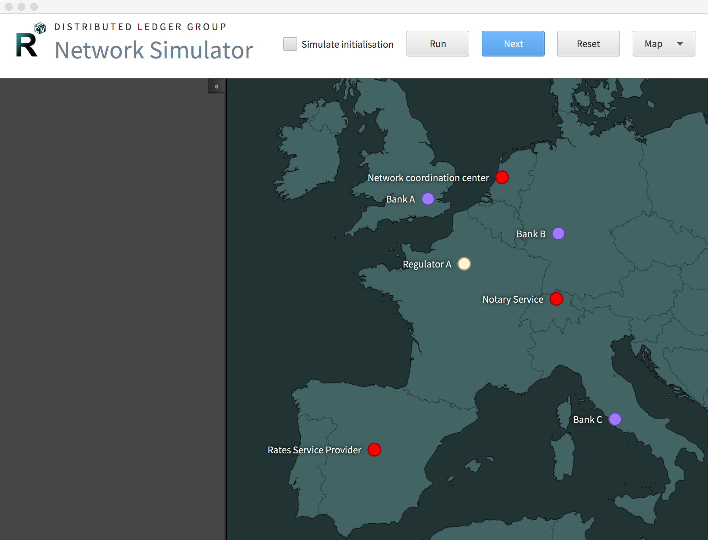

Network Simulator¶
A network simulator is provided which shows traffic between nodes through the lifecycle of an interest rate swap contract. It can optionally also show network setup, during which nodes register themselves with the network map service and are notified of the changes to the map. The network simulator is run from the command line via Gradle:
Windows:
gradlew.bat :samples:network-visualiser:run
Other:
./gradlew :samples:network-visualiser:run
You can produce a standalone JAR of the tool by using the :samples:network-visualiser:deployVisualiser target
and then using the samples/network-visualiser/build/libs/network-visualiser-*-capsule.jar file, where * is
whatever the current Corda version is.
What it is and is not¶
The simulator currently exists as an illustrative tool to help with explaining how Corda works in an example scenario.
It utilises the Simulator tools that support creating a simulated Corda network and the nodes running in it within
a single JVM, as an extension of the MockNetwork testing framework. See more about the MockNetwork and
testing flows here: Writing flow tests.
Whilst it is not yet fully generic or full featured, the intention is for the simulator to mature into the following, which it presently cannot do without writing more code:
- A tool for visualising new CorDapps and their flows to help with debugging, presentations, explanations and tutorials, but still running as a simulation in a single JVM.
- A tool to visualise the activity on a real Corda network deployment, with activity streams being fed from each node running in its own JVM, most likely on remote hosts.
Both of these scenarios would be fed by the standard observables in the RPC framework, rather than the local binding that the simulator uses currently. The ability to step through a flow one step at a time would obviously be restricted to single JVM simulations.
Interface¶
The network simulator can be run automatically, or stepped manually through each step of the interest rate swap. The options on the simulator window are:
- Simulate initialisation
- If checked, the nodes registering with the network map is shown. Normally this setup step is not shown, but may be of interest to understand the details of node discovery.
- Run
- Runs the network simulation in automatic mode, in which it progresses each step on a timed basis. Once running, the simulation can be paused in order to manually progress it, or reset.
- Next
- Manually progress the simulation to the next step.
- Reset
- Reset the simulation (only available when paused).
- Map/Circle
- How the nodes are shown, by default nodes are rendered on a world map, but alternatively they can rendered in a circle layout.
While the simulation runs, details of the steps currently being executed are shown in a sidebar on the left hand side of the window.